Rear Suspension
Spring ReplacementSpring:
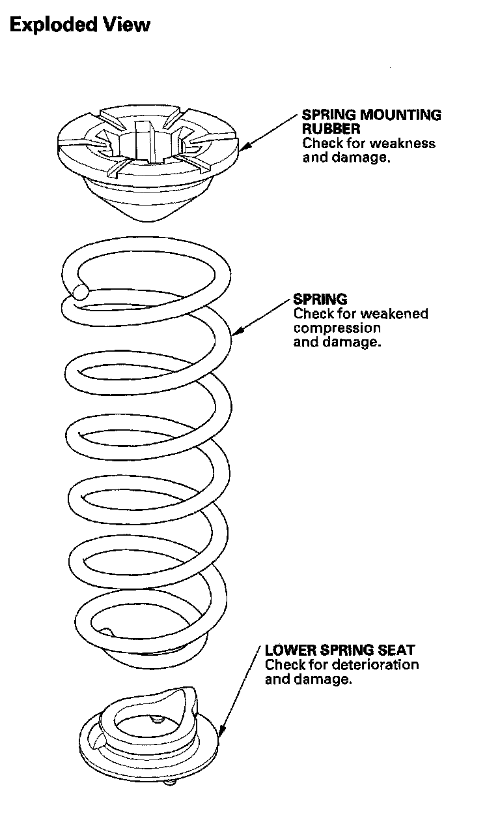
Removal
1. Raise the rear of the vehicle, and support it with safety stands in the proper locations.
2. Remove the rear wheel.
3. Remove the wheel sensor (A) from the knuckle (B). Do not disconnect the wheel sensor connector.
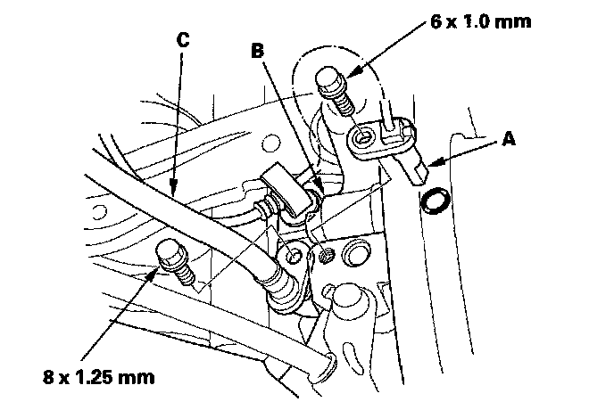
4. Remove the brake hose (C).
5. Position a floor jack at the connecting point of the trailing arm and the knuckle.
6. Remove the flange bolt (A) that connects the trailing arm (B) and the damper (C).
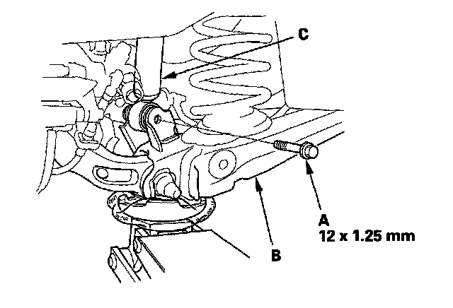
7. Remove the stabilizer link from the trailing arm.
8. Remove the flange bolt (A) that connects the knuckle (B) and the upper arm (C).
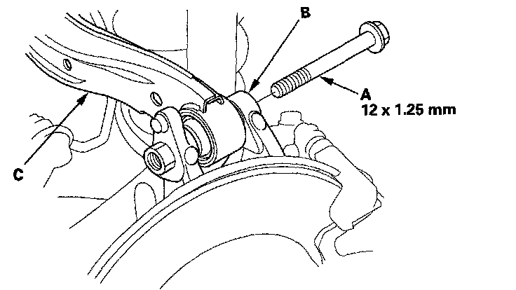
9. Remove the trailing arm front mounting bolts (A).
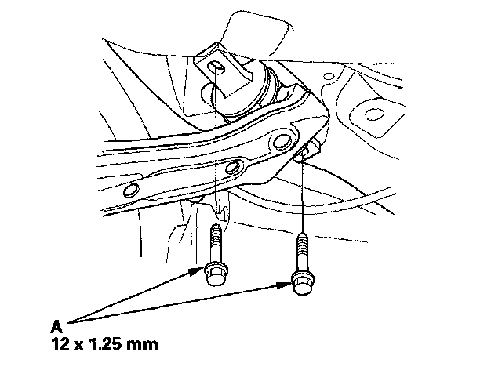
10. Lower the floor jack gradually.
11. Remove the spring mounting rubber (A), the spring (B) and the lower spring seat (C).
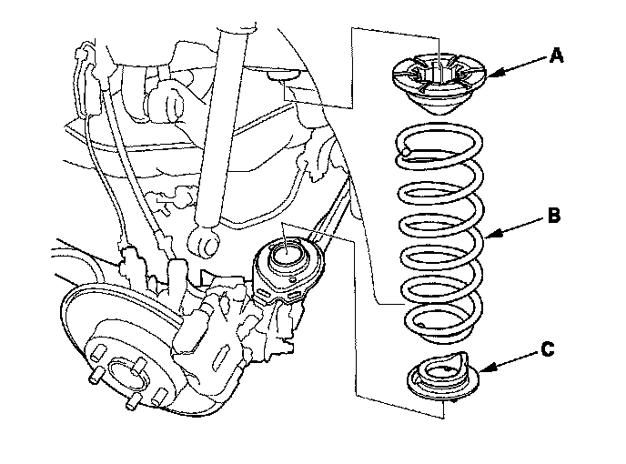
NOTE: If the clip is installed inside the spring mounting rubber, discard it.
Installation
1. Install the spring mounting rubber (A), the spring (B) and the lower spring seat (C).
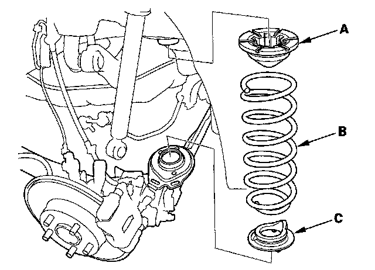
2. Align the bottom of the spring (A) and the lower spring seat (B) with the trailing arm (C) as shown.
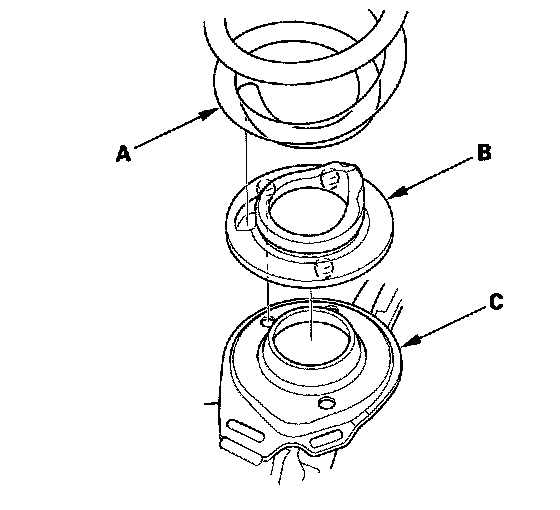
3. Loosely install the new trailing arm front mounting bolts (A).
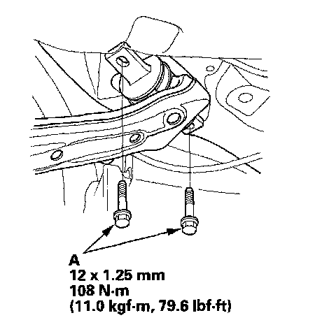
4. Loosely install a new flange bolt (A) on the knuckle (B) and the upper arm (C).
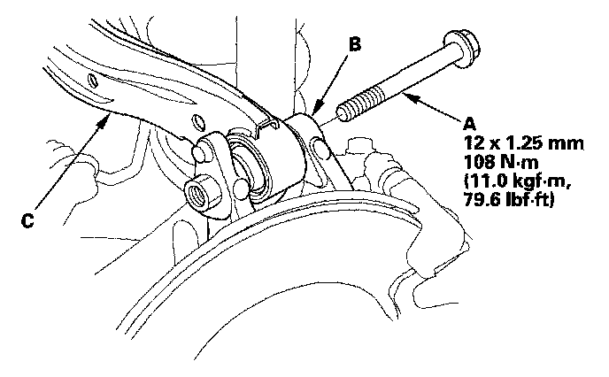
5. Slowly raise the jack until you can align the bolt hole with the holes in the trailing arm (A) and the damper (B), and install a new flange bolt (C).
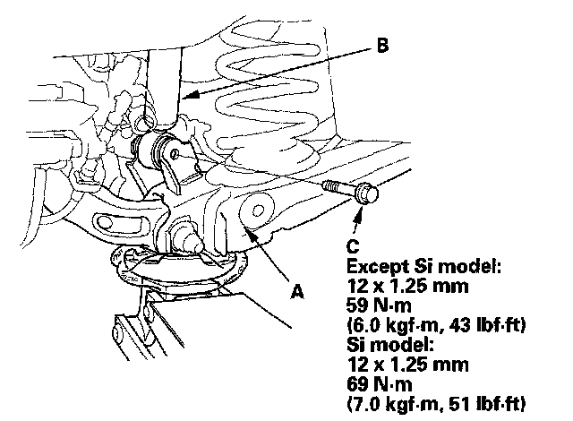
6. Install the stabilizer link on the trailing arm with a new self-locking nut, and lightly tighten both nuts.
7. Raise the rear suspension with a floor jack to load the vehicle weight.
8. Tighten all mounting hardware to the specified torque values. For stabilizer link torque specifications.
9. Install the wheel sensor (A) and the brake hose (B).
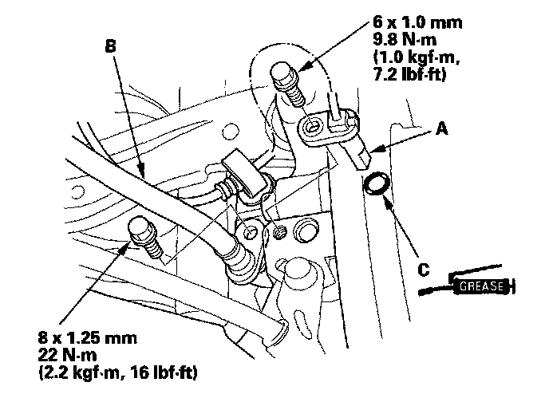
NOTE: Apply multipurpose grease to the mating surfaces on the knuckle and the O-ring (C).
10. Install the rear wheel.
NOTE: Before installing the wheel, clean the mating surface of the brake disc or the brake drum and inside of the wheel.
11. Check the wheel alignment, and adjust it if necessary.